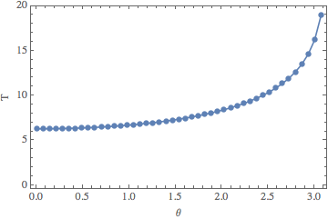

Mikhail Gaerlan
16 September 2015
Calculate the period of a plane pendulum using
$\displaystyle{T=2\sqrt{\frac{L}{g}}\int^1 _{-1}\frac{dx}{\sqrt{1-x^2}\sqrt{1-k^2x^2}}\text{ where } k=\sin(\theta _0/2).}$
The integral can be estimated using Gauss-Chebyshev quadrature using
$\displaystyle{S=\int^1 _{-1}\frac{F(x)}{\sqrt{1-x^2}}\approx\sum^N _{j=1}W _jF(x _j)\text{ where }x _j=\cos\left(\frac{\pi\left(j-\frac{1}{2}\right)}{N}\right)},\;W _j=\frac{\pi}{N}.}$

$\displaystyle{F(x)=\frac{2}{\sqrt{1-\sin^2(\theta _0/2)x^2}}}$
$\text{When }\theta _0<15^\circ\text{, } T/T _s \approx 1.00$
$\text{The required }N\text{ increases as }\theta _0\text{ increases.}$